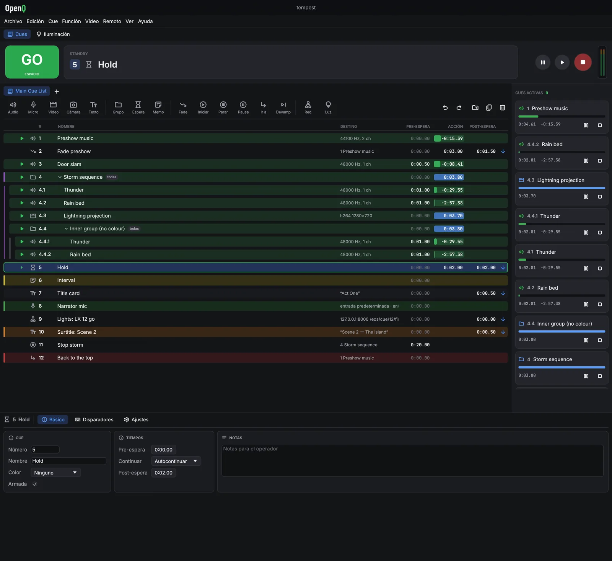

Control de espectáculos en directo para sonido, vídeo y escena
Monta una lista de cues — música, efectos, películas, rótulos, fundidos, mensajes a la mesa de luces — y lleva todo el espectáculo con un solo botón GO. Gratis para cualquier producción, también comercial.
Instala OpenQ
En un terminal:
curl --proto '=https' --tlsv1.2 -fsSL https://github.com/iagonunez/OQup/releases/latest/download/install.sh | shDescarga la versión más reciente (x86_64 o ARM64; una distribución de 2022 o posterior), instala las bibliotecas de sonido y dispositivos que falten con los paquetes de tu distribución (pregunta antes) y añade OpenQ al menú de aplicaciones.
En un terminal:
curl --proto '=https' --tlsv1.2 -fsSL https://github.com/iagonunez/OQup/releases/latest/download/install.sh | shmacOS 11 o posterior, Apple silicon o Intel. OpenQ queda en Aplicaciones dentro de tu carpeta personal.
En PowerShell:
powershell -ExecutionPolicy Bypass -c "irm https://github.com/iagonunez/OQup/releases/latest/download/install.ps1 | iex"Windows 10/11 de 64 bits. Después OpenQ está en el menú Inicio.
El instalador, OQup, descarga OpenQ con las bibliotecas FFmpeg LGPL que usa y, con iluminación, el visualizador 3D OQVis. Más adelante: oqup update · oqup versions · oqup uninstall; oqup install --build-source lo compila en tu ordenador, --no-lighting instala solo las cues.
Paso a paso
OpenQ se instala con su instalador, OQup. OQup descarga la versión más reciente de OpenQ para tu sistema, la comprueba, añade las bibliotecas de FFmpeg que usa para el vídeo (una versión LGPL) y la instala con una entrada en el menú. Con el espacio de iluminación (lo predeterminado) instala también OQVis, el visualizador 3D que abre Abrir en OQVis. Tus espectáculos nunca se tocan.
Necesitas conexión a internet. En Linux, OQup puede pedir tu contraseña para instalar algunas bibliotecas del sistema (sonido, dispositivos); pregunta antes.
Linux
- Abre una terminal, pega la orden de abajo y pulsa Intro:
curl --proto '=https' --tlsv1.2 -fsSL https://github.com/iagonunez/OQup/releases/latest/download/install.sh | sh - El primer paso descarga OQup, comprueba la suma de control publicada y lo guarda en
~/.local/bin. Después arranca. - Si faltan bibliotecas del sistema que OpenQ necesita (ALSA, PipeWire, udev), OQup las muestra y pregunta antes de instalarlas con el gestor de paquetes de tu distribución. Responde que sí; el gestor pedirá tu contraseña.
- Deja la terminal abierta hasta que diga que OpenQ está instalado.
- Abre OpenQ desde el menú de aplicaciones (busca "OpenQ"), o escribe
openqen una terminal.
Si la terminal dice openq: orden no encontrada, ~/.local/bin todavía no está en tu PATH.
Añádela una vez y abre una terminal nueva:
fish_add_path ~/.local/bin # fish
echo 'export PATH="$HOME/.local/bin:$PATH"' >> ~/.bashrc # bash (zsh: ~/.zshrc)macOS
- Abre Terminal (pulsa ⌘ Espacio y escribe "Terminal").
- Pega la orden de abajo y pulsa Intro:
curl --proto '=https' --tlsv1.2 -fsSL https://github.com/iagonunez/OQup/releases/latest/download/install.sh | sh - La app queda en
~/Applications/OpenQ.app, la carpeta Applications de tu carpeta personal, con FFmpeg dentro. Ábrela desde el Finder (Ir → Carpeta personal → Applications) o con Spotlight.
Windows
- Abre PowerShell: pulsa la tecla Inicio, escribe PowerShell y pulsa Intro.
- Pega la orden de abajo y pulsa Intro:
powershell -ExecutionPolicy Bypass -c "irm https://github.com/iagonunez/OQup/releases/latest/download/install.ps1 | iex" - Al terminar, OpenQ está en el menú Inicio y en Configuración → Aplicaciones → Aplicaciones instaladas.
Compilar en tu ordenador
oqup install --build-source compila OpenQ (y OQVis) desde el código fuente en tu ordenador en vez de
descargar la versión publicada. Antes, OQup instala lo que necesita la compilación: una copia privada de Rust si no hay
ninguna, un compilador de C y libclang, y FFmpeg (en Linux con los paquetes de tu distribución, preguntando antes; en
macOS las Command Line Tools de Apple y después FFmpeg compilado desde su código; en Windows las C++ Build Tools de
Microsoft, cuyo instalador se abre para que lo aceptes). Necesita varios gigabytes libres y la primera compilación tarda
mucho; las siguientes son más rápidas.
Si algo falla
oqup doctormuestra qué está instalado y qué le falta a una instalación.- Si la instalación se detiene, lee las últimas líneas que muestra, corrige la causa (casi siempre un paquete que falta o un instalador cancelado) y vuelve a ejecutar la orden.
Actualizar y desinstalar
Para obtener una versión más nueva, ejecuta oqup update: vuelve a instalar OpenQ cuando sale una versión
nueva, de la misma forma que la última vez. oqup versions muestra las versiones que puedes instalar, y
oqup install --ref v0.4.0 instala una de ellas. Para quitar OpenQ, ejecuta oqup uninstall;
pregunta antes. Con --purge quita también las descargas, el Rust, las dependencias y la caché de compilación
de OQup. En Windows también puedes quitarlo desde Configuración → Aplicaciones → Aplicaciones instaladas. Tus
espectáculos nunca se tocan.
Si solo necesitas cues, oqup install --no-lighting instala OpenQ sin el espacio de iluminación (sin vista
Iluminación, cues de luz, descargas de aparatos ni OQVis). Los espectáculos con un diseño de iluminación se siguen
abriendo, lo conservan y reproducen sus cues de luz. oqup install --lighting lo vuelve a añadir;
--no-oqvis mantiene la iluminación pero deja fuera OQVis.

Qué hace
Todo se explica paso a paso en el manual de usuario, que también viene con la aplicación (Ayuda → Manual de usuario, o F1).